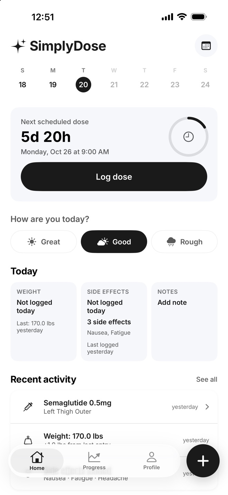

How do I set a GLP-1 dose reminder?
In SimplyDose, open Profile, choose Notifications, and turn on Dose reminders. You can see the next scheduled dose on Home and check the next reminder in Notifications.
See the steps
Set up and check your reminder
Check the schedule you entered
On Home, look at Next scheduled dose. The date and time reflect the schedule saved in the app.
Turn on the reminder
Open Profile, then Notifications. Turn on Dose reminders and allow notifications in iOS if prompted.
Check what comes next
Look for Next dose-time reminder in Notifications. If iOS blocks notifications, use Open Settings on that screen to check your permission. SimplyDose schedules up to 16 daily reminders or eight on other schedules. Open the app regularly to renew them.
Where did I last inject?
On Home, check Recent activity for your last saved dose and its injection site. Choose See all for older entries. If you did not record a site, look back at your own notes. For a missed dose or a change to your schedule, ask your prescriber or pharmacist.
See the shot-day checklist Learn how to log side effectsKeep your records in SimplyDose.
An account and active SimplyDose Premium subscription are required for tracking features.
View on the App Store